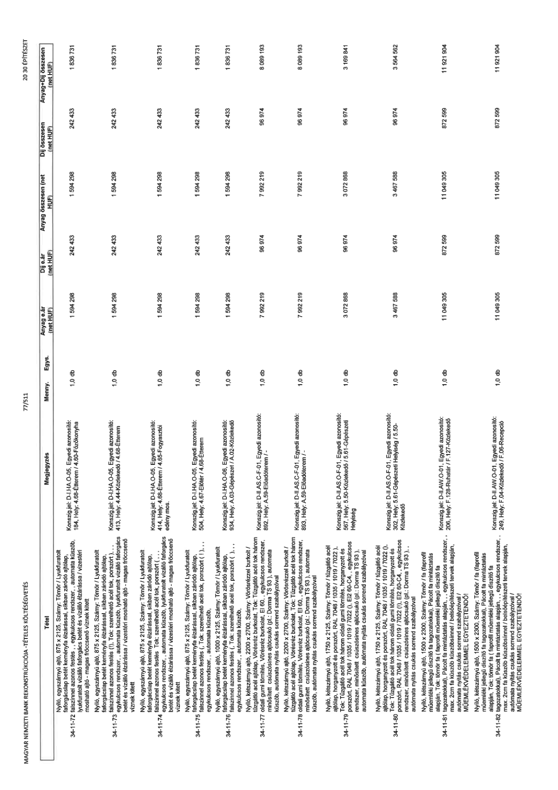

| Tétel | Megjegyzés | Menny. | Egys. | Anyag e.ár (net HUF) | Díj e.ár (net HUF) | Anyag összesen (net HUF) | Díj összesen (net HUF) | Anyag+Díj összesen (net HUF) |
|---|---|---|---|---|---|---|---|---|
| 34-11-72 Nyíló, egyszárnyú ajtó, 875 x 2125, Szárny: Tömör / Lyukfuratolt forgácslap betét keményfa élzárással, síkban záródó ajtólap, falburkolattal azonos festés (!!), Tok: szerelhető acél tok, porszórt, „ egykulcsos rendszer, „ automata küszöb, lyukfuratolt vízzáró fafürész betét és vízzáró élzárással / vizesen mosható ajtó - magas fröccsenő víznek kitett | Konsign.jel: D-I.HA.O-05, Egyedi azonosító: 184, Hely: 4.68-Étterm / 4.60-Főzőkonyha | 1,0 | db | 1 594 298 | 242 433 | 1 594 298 | 242 433 | 1 836 731 |
| 34-11-73 Nyíló, egyszárnyú ajtó, 875 x 2125, Szárny: Tömör / Lyukfuratolt forgácslap betét keményfa élzárással, síkban záródó ajtólap, falburkolattal azonos festés (!!), Tok: szerelhető acél tok, porszórt, „ egykulcsos rendszer, „ automata küszöb, lyukfuratolt vízzáró fafürész betét és vízzáró élzárással / vizesen mosható ajtó - magas fröccsenő víznek kitett | Konsign.jel: D-I.HA.O-05, Egyedi azonosító: 413, Hely: 4.44-Közlekedő / 4.68-Étterm | 1,0 | db | 1 594 298 | 242 433 | 1 594 298 | 242 433 | 1 836 731 |
| 34-11-74 Nyíló, egyszárnyú ajtó, 875 x 2125, Szárny: Tömör / Lyukfuratolt forgácslap betét keményfa élzárással, síkban záródó ajtólap, falburkolattal azonos festés (!!), Tok: szerelhető acél tok, porszórt, „ egykulcsos rendszer, „ automata küszöb, lyukfuratolt vízzáró fafürész betét és vízzáró élzárással / vizesen mosható ajtó - magas fröccsenő víznek kitett | Konsign.jel: D-I.HA.O-05, Egyedi azonosító: 414, Hely: 4.58-Étterm / 4.65-Fogyasztói edény mos | 1,0 | db | 1 594 298 | 242 433 | 1 594 298 | 242 433 | 1 836 731 |
| 34-11-75 Nyíló, egyszárnyú ajtó, 875 x 2125, Szárny: Tömör / Lyukfuratolt forgácslap betét keményfa élzárással, síkban záródó ajtólap, falburkolattal azonos festés (!!), Tok: szerelhető acél tok, porszórt, (,,), „ egykulcsos rendszer, „ automata küszöb, | Konsign.jel: D-I.HA.O-05, Egyedi azonosító: 504, Hely: 4.67-Előtér / 4.68-Étterm | 1,0 | db | 1 594 298 | 242 433 | 1 594 298 | 242 433 | 1 836 731 |
| 34-11-76 Nyíló, egyszárnyú ajtó, 1000 x 2125, Szárny: Tömör / Lyukfuratolt forgácslap betét keményfa élzárással, síkban záródó ajtólap, falburkolattal azonos festés (!!), Tok: szerelhető acél tok, porszórt, (,,), „ egykulcsos rendszer, „ automata küszöb, | Konsign.jel: D-I.HA.O-06, Egyedi azonosító: 934, Hely: A.03-Gépészet / A.02-Közlekedő | 1,0 | db | 1 594 298 | 242 433 | 1 594 298 | 242 433 | 1 836 731 |
| 34-11-77 Nyíló, kétszárnyú ajtó, 2200 x 2700, Szárny: Vörösrézzel burkolt / tűzgátló acél ajtólap, Vörösréz burkolat, Tok: Tűzgátló acél tok három oldali gumi tömítés, Vörösréz burkolat, EI 60, „ egykulcsos rendszer, minősített csúszósínes ajtócsukó (pl.: Dorma TS 93), automata küszöb, automata nyitás sorrend szabályzóval | Konsign.jel: D-II.AS.C-F-01, Egyedi azonosító: 892, Hely: A.59-Előadóterem / - | 1,0 | db | 7 992 219 | 96 974 | 7 992 219 | 96 974 | 8 089 193 |
| 34-11-78 Nyíló, kétszárnyú ajtó, 2200 x 2700, Szárny: Vörösrézzel burkolt / tűzgátló acél ajtólap, Vörösréz burkolat, Tok: Tűzgátló acél tok három oldali gumi tömítés, Vörösréz burkolat, EI 60, „ egykulcsos rendszer, minősített csúszósínes ajtócsukó (pl.: Dorma TS 93), automata küszöb, automata nyitás sorrend szabályzóval | Konsign.jel: D-II.AS.C-F-01, Egyedi azonosító: 893, Hely: A.59-Előadóterem / - | 1,0 | db | 7 992 219 | 96 974 | 7 992 219 | 96 974 | 8 089 193 |
| 34-11-79 Nyíló, kétszárnyú ajtó, 1750 x 2125, Szárny: Tömör / tűzgátló acél ajtólap, horganyzott és porszórt, RAL 7048 / 1035 / 1019 / 7022 (!), Tok: Tűzgátló acél tok három oldali gumi tömítés, horganyzott és porszórt, RAL 7048 / 1035 / 1019 / 7022 (!), EI2 60-C4, „ egykulcsos rendszer, minősített csúszósínes ajtócsukó (pl.: Dorma TS 93), automata küszöb, automata nyitás sorrend szabályzóval | Konsign.jel: D-II.AS.O-F-01, Egyedi azonosító: 567, Hely: 5.50-Közlekedő / 5.61-Gépészeti Helyiség | 1,0 | db | 3 072 868 | 96 974 | 3 072 868 | 96 974 | 3 169 841 |
| 34-11-80 Nyíló, kétszárnyú ajtó, 1750 x 2125, Szárny: Tömör / tűzgátló acél ajtólap, horganyzott és porszórt, RAL 7048 / 1035 / 1019 / 7022 (!), Tok: Tűzgátló acél tok három oldali gumi tömítés, horganyzott és porszórt, RAL 7048 / 1035 / 1019 / 7022 (!), EI2 60-C4, „ egykulcsos rendszer, minősített csúszósínes ajtócsukó (pl.: Dorma TS 93), automata küszöb, automata nyitás sorrend szabályzóval | Konsign.jel: D-II.AS.O-F-01, Egyedi azonosító: 302, Hely: 5.61-Gépészeti Helyiség / 5.50-Közlekedő | 1,0 | db | 3 467 588 | 96 974 | 3 467 588 | 96 974 | 3 564 562 |
| 34-11-81 Nyíló, kétszárnyú ajtó, 1500 x 2300, Szárny: Tömör / fa (laprolf műemléki jellegű díszítő fa tagozatokkal), Pácolt fa mintáztatás alapján, Tok: tömör fa ( faprolf műemléki jellegű díszítő fa tagozatokkal), Pácolt fa mintáztatás alapján, „ egykulcsos rendszer, max. 2cm fa küszöb küszöbsínnel / belsőépítészeti tervek alapján, automata nyitás csukás sorrend szabályzóval / MŰEMLÉKVÉDELEMMEL EGYEZTETENDŐ! | Konsign.jel: D-II.AW.O-01, Egyedi azonosító: 206, Hely: F.128-Ruhatár / F.127-Közlekedő | 1,0 | db | 11 049 305 | 872 599 | 11 049 305 | 872 599 | 11 921 904 |
| 34-11-82 Nyíló, kétszárnyú ajtó, 1500 x 2300, Szárny: Tömör / fa (laprolf műemléki jellegű díszítő fa tagozatokkal), Pácolt fa mintáztatás alapján, Tok: tömör fa ( faprolf műemléki jellegű díszítő fa tagozatokkal), Pácolt fa mintáztatás alapján, „ egykulcsos rendszer, max. 2cm fa küszöb küszöbsínnel / belsőépítészeti tervek alapján, automata nyitás csukás sorrend szabályzóval / MŰEMLÉKVÉDELEMMEL EGYEZTETENDŐ! | Konsign.jel: D-II.AW.O-01, Egyedi azonosító: 249, Hely: F.04-Közlekedő / F.08-Recepció | 1,0 | db | 11 049 305 | 872 599 | 11 049 305 | 872 599 | 11 921 904 |
